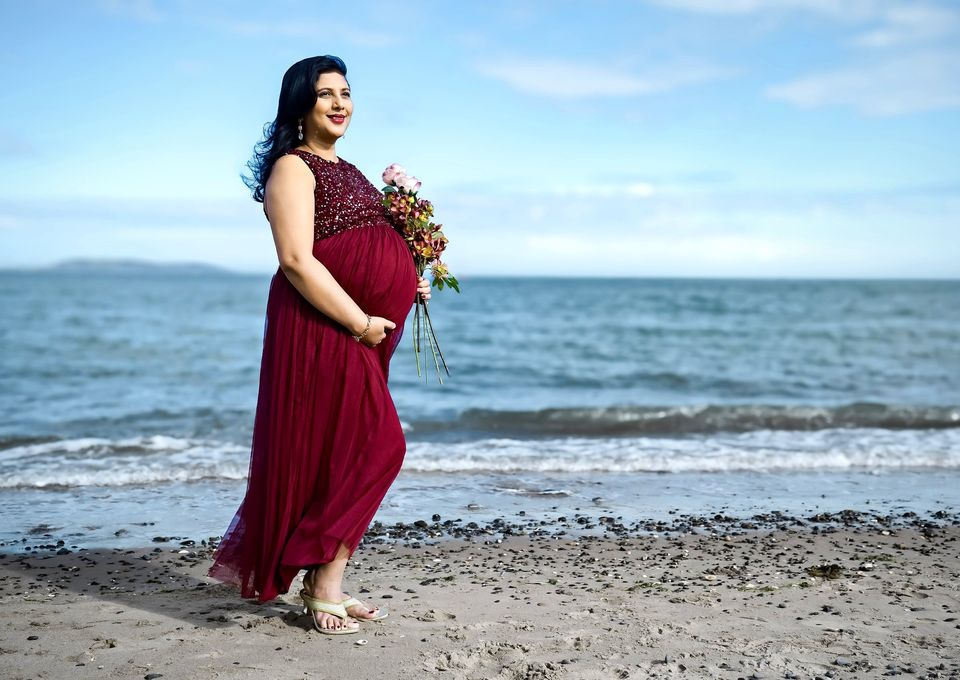

Vassu'sPhotographyMaternity, newborn & family portraits
Soft, honest photographs of the people you love — taken slowly, in good light, while you simply enjoy being together.
A seaside maternity session, late summer
01 / 05

Hello, I'm Vaishnavi
I photograph the quiet, in-between moments — a hand resting on a bump, a toddler's belly laugh, the look that passes between two people.
Sessions with me are relaxed and unhurried. I'll guide you gently into easy, natural poses and take care of the light and the little details, so you can stop worrying about the camera and just be yourselves.
You'll come away with photographs that feel like you: warm, natural and made to last.
Vaishnavi
What I photograph
Every chapter of a growing family, from the first bump to the grandparents.


Recent moments
See all photos


Some moments only happen once. Let's keep them.